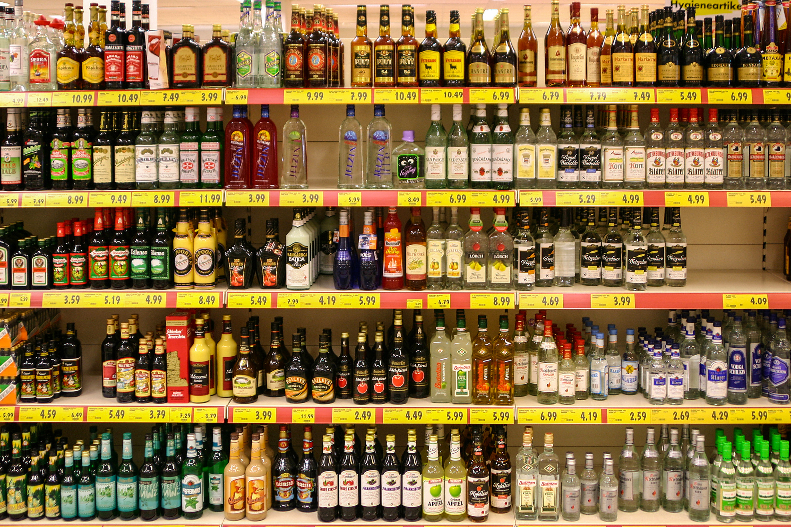

Bebidas
Bebida é um tipo de líquido, o qual é especificamente preparado para consumo humano. Existem muitos tipos de bebidas, que podem ser divididas em vários grupos, tais como água pura, xaropes, sucos de frutas ou vegetais, bebidas quentes, refrigerantes (bebidas gaseificadas), bebidas alcoólicas. Para além de satisfazer uma necessidade básica, bebidas constituem parte da cultura da sociedade humana. Sendo as principais: Água, Sucos, Bebidas Alcoólicas e Néctares. Essas bebidas são as mais destacáveis em toda a história da humanidade.

- Água
- Bebidas Alcoólicas
- Sucos
- Néctares
- Licores
Link para melhores informações: